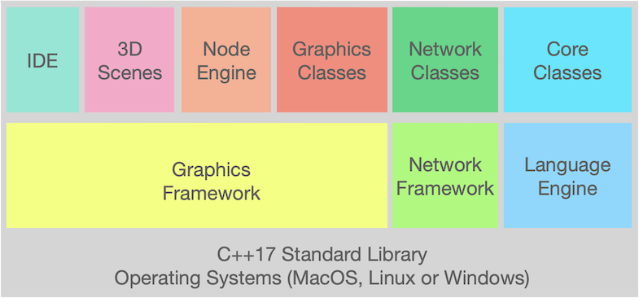
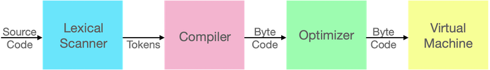
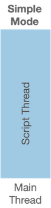
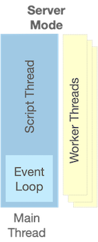
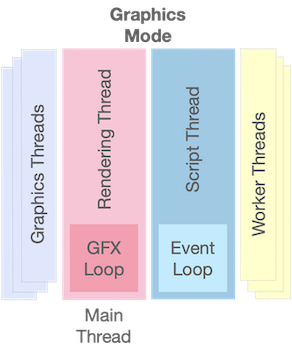
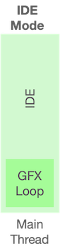

ObjectTalk Architecture
The ObjectTalk ecosystem was designed as a cross-platform capability. Today, ObjectTalk runs on MacOS, Windows and Linux thanks to a large number of great open source packages.
The ObjectTalk ecosystem is contained in a single executable that embeds all modules and their resources into one unit. Originally, the design called for a small executable that would load shared modules/assets on demand. It was however decided not to continue with this approach as dealing with DLL hell on Windows, keeping versions synchronized and putting things all over the filesystem would lead to fragmentation and possibly missing/incompatible pieces. Today, the ObjectTalk ecosystem compiles into that single unit that contains everything. The file called “ot” can be moved around with easy and will always be complete, coherent and in sync.
During the compilation of ObjectTalk it is decided whether some user interface subsystems are included. On headless Linux systems, the Graphical User Inteface (GUI) is omitted and the “ot” executable can only run command line scripts or simple servers like a web server. When the GUI libraries are available on the host system, “ot” is compiled to offer all subsystems. On MacOS and Windows this is the default but even here a stripped-down version can be compiled by setting a flag during compilation.
Github is used as the source code repository and on every commit, the latest versions of the “ot” executable are built for MacOS, Linux and Windows and can be downloaded. Stable versions will also be made available from the same Github repository. Documentation for ObjectTalk is also included in the repository and the documentation website is automatically updated on every commit (off course the developer has to ensure the documentation is inline with the software. Documentation still doesn’t write itself).
The diagram below depicts the subsystems included in the ObjectTalk ecosystem. As mentioned above, the four boxes on the right are available on both ObjectTalk configurations whereas the five boxes on the left are only available when the host operating system offers GUI libraries.

Operating System Foundation
ObjectTalk currently runs on MacOS, Linux and Windows. In general, the main development platform is MacOS and typically the latest version is used. For Linux, Ubuntu 22.04 is used and on Billy boxes, Window 11. The Github continuous integration tasks also use the latest versions of these operating systems. For those that use other Linux distributions, it is likely that ObjectTalk will compile out-of-the-box, but this is not verified.
The entire ObjectTalk ecosystem is written in C++17 which is the most recent version that is best supported on all platforms. Once C++20 finds better support, we will switch to it.
To simplify the ObjectTalk code baseline, the C++ standard library is used to the maximum extend possible. Basic I/O function, filesystem access, containers and memory management are simply used as is. Compiler developers typically do a good job optimizing things on each platform.
I know there are lot of people out there that believe they can do better than the standard library (and they might be right) but the time required to optimize on multiple platforms is not worth it. I’m old enough to have written operating systems in assembler and had to maintain C libraries for even the most simple memory management or data structures. These days, I gladly take free cross platform solutions and sacrifice a few CPU cycles (I have more of those than braincells).
To prove that I'm a hypocrite, the one exception to the rule is shared pointers. The version included in the standard library is thread safe and therefore slow. Given that ObjectTalk always runs in a single thread, a replacement shared pointer class is included that is not thread safe but makes ObjectTalk twice as fast. Off course I argue that I would have used the standard library if it only had included a fast non-thread safe smart pointer.
ObjectTalk Language Engine
The language engine uses some simple components to implement ObjectTalk. A lexical scanner turns source code into tokens, the compiler translates these tokens to bytecode for a platform-independent imaginary CPU, an optimizer turns simple code sequences into super instructions and the stack-based virtual machine executes this bytecode.

Core Classes
Given that ObjectTalk’s virtual machine only understands a stack of opaque objects, there members, member functions and basic branching, even the most fundamental operations like additions, string manipulation and I/O must be implemented in ObjectTalk classes. The core classes subsystem provides fundamental classes for primitives (booleans, integers, reals, strings and functions), collections (arrays, dictionaries and sets) as well as a set of operating system, filesystem and stream classes.
Asynchronous I/O
When implementing servers or I/O heavy applications, you typically have two options. Firstly, you can go multithreaded and use many threads and thread pools to handle I/O request. This approach however has proven not to be too scaleable and most web servers today don’t use it or have complicated strategies to deal with performance and bottlenecks. The other approach is to use a single thread with an event loop that runs as fast as possible and simply responds to operating system events whenever they happen. ObjectTalk uses this last approach based on the Libuv library that offers asynchronous operations as a cross-platform solutions. Libuv was originally developed for Node.js and is still in use there. This means that it is well tested and maintained.
HTTP Server
ObjectTalk provides a number of classes that make it easy to implement a web server on top of the Async I/O library. For those familiar with Node.js and the Express package, you will recognize the similarities. If you need an operational asynchronous web server, use Node.js. If you want to use a simple server using a few lines of code, this ObjectTalk library might be the ticket.
Graphics Framework
As mentioned above, the graphics framework is optional and will only be compiled in when the host operating system provided the required GUI libraries. The foundation of this framework is provided by a number of open source cross-platform libraries. GLFW is used as an system independent abstraction for windows and user/system interactions. BGFX is used as a system independent abstraction to render graphics supporting Metal, OpenGL, Vulkan and DirectX APIs. Dear ImGui is used as a neutral user interface library and all widgets are implemented with it. The framework glues all of this together and ObjectTalk users will never have to deal with this level of detail.
In the original design for the graphics framework, the ObjectTalk language was used to construct all the components for a user interface. Unfortunately, this led to very verbose code and it would take pages of code to create all the things you would need for a user interface, 2D board or 3D scene. In fact, the ratio between construction code and functionality was so bad that a new approach was implemented.
Today, the framework uses an Entity Component System (ECS) as an architectural pattern to represent user interfaces, 2D (game) boards and 3D (game) scenes. The Integrated Development Environment (IDE), which is explained later, provides editors to manipulates ECS objects. By doing this, the ObjectTalk language is no longer used to construct visual objects but it is used for runtime logic and interaction. For those old enough to remember the Model-View-Controller architectural pattern, the model is expressed in the ECS, the view is provided internally by the ObjectTalk ecosystem and the controller is written in ObjectTalk.
GUI Widgets
ObjectTalk has a rich set of platform independent widgets that can be used to create user interfaces and apps.
2D Boards
ObjectTalk has a rich set of 2D components that can be used to create 2D billboards or board games.
3D Scenes
ObjectTalk has a rich set of 3D components that can be used to create pretty 3D environments or games. Modern graphics techniques like Physically Based rendering (PBR), deferred and forward rendering, High Dynamic Range (HDR) pipelines, Screen-Space Ambient Occlusion (SSAO), and post-processing filter like bloom, depth-of-field, lens flare, gamma correction and brightness are all available.
Integrated Development Environment (IDE)
To top it all off, ObjectTalk comes with its own IDE to edit ObjectTalk scripts, GUIs, boards and scenes. The IDE runs in a single window (with tabs) and has full undo/redo/cut/copy/paste capabilities for all content types. From the IDE, script, GUIs, boards and scenes can be validated and run. Errors are highlighted inline making it easy and fast to finish a project.
As was explained above, the ObjectTalk ecosystem comes as a single executable file called “ot”. This single executable can run in four different modes depending on how it was launched.
Simple Mode

In its simplest form, “ot” is a scripting engine that can execute ObjectTalk scripts from the command line. In this mode, the main (and only) thread compiles and executes the code until the script ends.
Server Mode

In server mode, a script is started like described above in Simple Mode. The difference is that at some point a server script starts the event loop after which control passed to the engine. Only callbacks are made from that point forward similar to other asynchronous frameworks like Node.js. The startup script as well as the event loop are all executed from the main and only thread.
Graphics Mode

In graphics mode, the starting point can be a script or a JSON file that contains all the information detailing the structure and capabilities of a board, scene or node-based processing. The JSON file can refer to external assets such as images, sprites or models and can also refer to ObjectTalk scripts that act as controllers in the created graphical world.
The required JSON file can be constructed by hand but this is not recommended. The provided IDE has dedicated editors for all the graphical Entity Component System (ECS) JSON files.
In graphical mode a number of threads are used to run the application which might be slightly different based on host operating system. The main thread will be used as the windowing and rendering thread. This thread interacts with the native windows system and communicates with the GPU. It might be more intuitive to make this a secondary thread but most operating systems require that these tasks are execute from the primary or startup thread.
A second thread will therefore be used to run the application, do most of the CPU work and run the event loop. The ObjectTalk callbacks will also run in this thread.
The graphical framework automatically and transparently connects the main (graphical) thread with the application or scripts thread.
Integrate Development Environment (IDE) Mode

In the Integrate Development Environment (IDE) mode is the IDE will act as the main application just like any other program in graphics mode. When the IDE runs a script or graphics application, a subprocess is spawned in the applicable mode. Bi-directional Inter Process Communication (IPC) is setup to allow the IDE to communicate with the ObjectTalk script, GUI, board, scene or node-based apps.